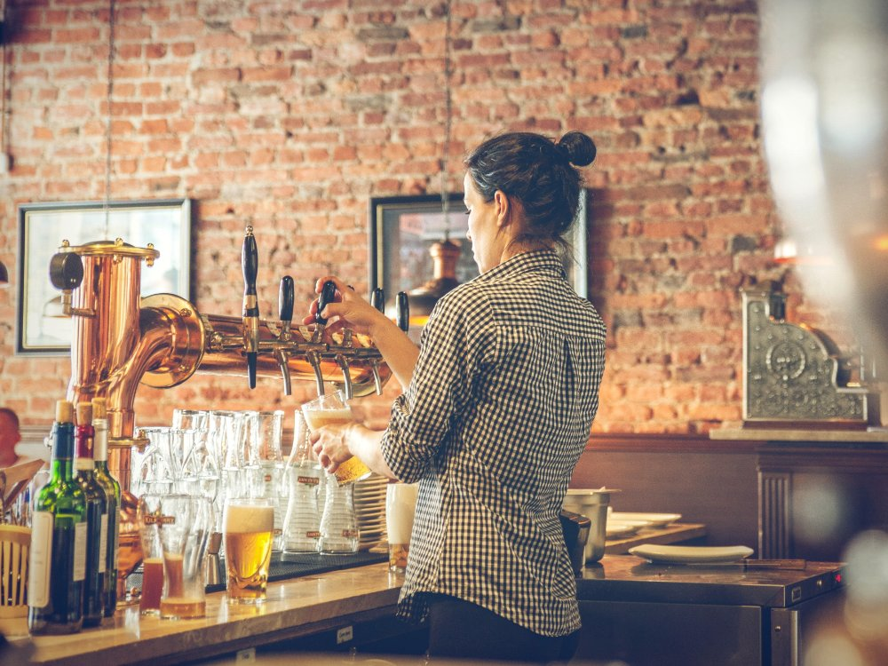
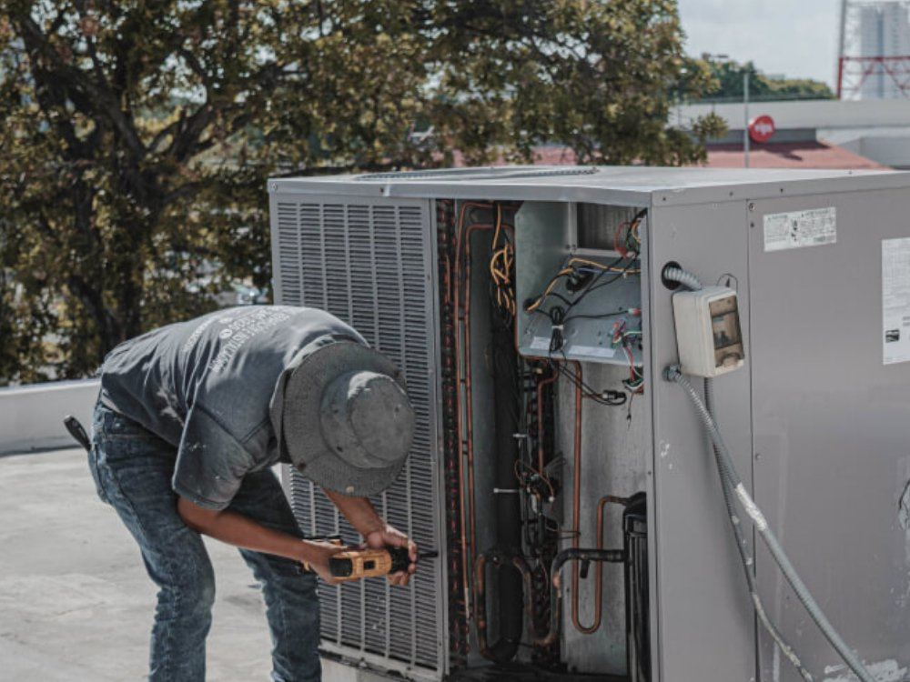
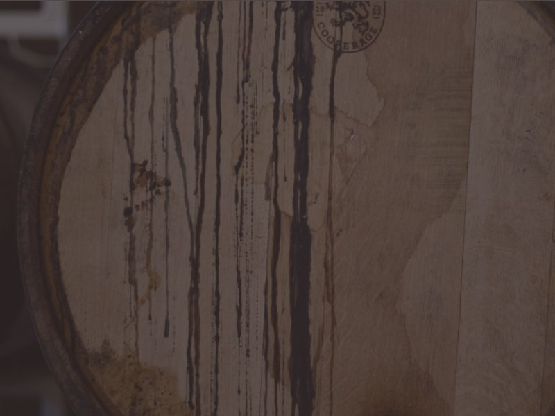

Un service de A à Z
Un refroidisseur s'achète pour des années. C'est pourquoi notre service ne s'arrête pas à la livraison : nous installons, entretenons et réparons votre installation de tirage complète — vite et bien, dans tout le Benelux.
Posé dans les règles de l'art, prêt à tirer
Nos techniciens placent votre refroidisseur Golderos et raccordent l'installation complète : conduites, python, colonne, robinets et CO₂. Nous réglons la température et le comportement de la mousse en fonction de la bière que vous servez, et livrons le tout prêt à tirer.
- Placement et raccordement du refroidisseur, du python et des colonnes
- Réglage de la température, de la pression et du contrôle de la mousse
- Test de réception avec votre propre bière, plus une courte formation pour votre équipe

Votre refroidisseur en pleine forme, toute l'année
Golderos a démarré en 1970 comme atelier de réparation — réparer et entretenir font partie de l'ADN de la marque. Nous perpétuons cette tradition au Benelux : contrats d'entretien préventif, interventions rapides en cas de panne et révision de moteurs agitateurs et circuits frigorifiques.
Les refroidisseurs d'autres marques sont également les bienvenus dans notre atelier.
- Contrats d'entretien avec contrôle et nettoyage périodiques
- Intervention sous 48 heures dans tout le Benelux
- Pièces d'origine Golderos de notre propre stock
- Révision de moteurs agitateurs, serpentins et compresseurs

Conceptions exclusives et projets sur mesure
Une brasserie avec sa propre identité visuelle, un festival aux débits exceptionnels ou un concept qui n'existe pas encore ? Golderos développe sur demande des conceptions exclusives et des projets sur mesure. La technologie a été développée pour la bière, mais fonctionne pour toute boisson servie fraîche à la pression.
- Étude de capacité et conception technique selon votre situation
- Refroidisseurs à votre image ou aux dimensions adaptées
- Solutions pour bière, sodas, vin, cocktails et eau

Une panne de votre refroidisseur ?
Appelez-nous ou envoyez un message — nous planifions une intervention au plus vite.